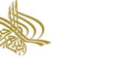
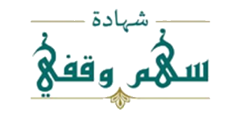
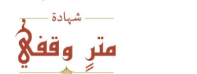

{{ meterHeading }}
{{ meterIntro }}

{{ tChooseUnit }}
{{ tDonateNow }}
{{ meterUnitPriceLabel }}
{{ meterUnitPrice }}
{{ tCount }}
الرجاء تعبئة الاسم وخانة "وقد أوقفها عن" أولًا
{{ tTotal }}
{{ meterTotal }}
{{ meterCountLabel }}
{{ meterCount }}
{{ tCertNoLabel }}
{{ meterCertNo }}



{{ tCertifiesThat }}
{{ meterNameDisplay }} {{ tEndowedLine }} ({{ meterCount }}) {{ tValueLabel }} ({{ meterTotal }})
{{ tOnBehalfLabel }} {{ meterOnBehalfDisplay }}
{{ tWaqfLegalText }}
{{ meterCertDate }}
{{ tDateLabel }}
{{ tVideoTitle }}
{{ whatIsWaqfHeading }}
{{ whatIsWaqfText }}
{{ wf.title }}
{{ wf.text }}
{{ aboutDetailHeading }}
{{ aboutSub1Heading }}
{{ meterText1 }}
{{ aboutSub2Heading }}
{{ meterText2 }}
{{ tAboutSub3 }}
{{ meterText3 }}
{{ aidTypesHeading }}
{{ aidTypesText }}
{{ goalsHeading }}
{{ g.n }}
{{ g.text }}
{{ partsHeading }}
{{ partsText }}
{{ faqHeading }}
{{ fq.answer }}
{{ ctaHeading }}
{{ ctaText }}